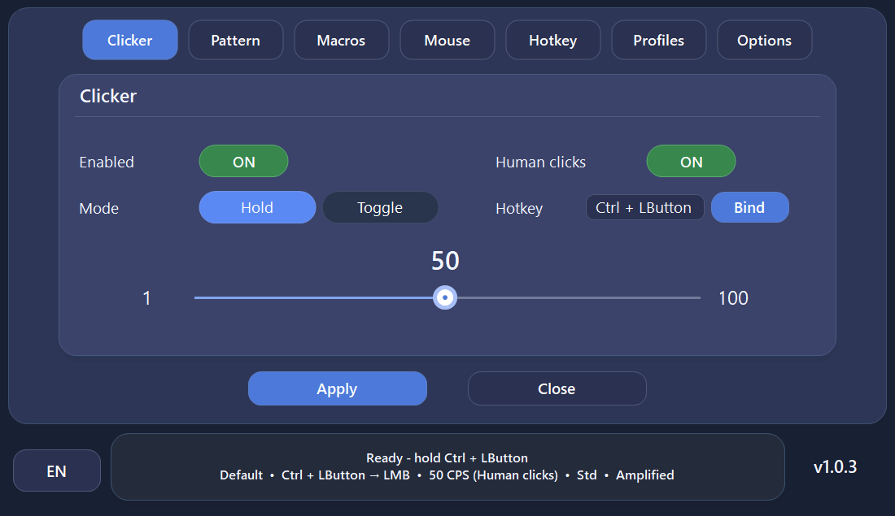
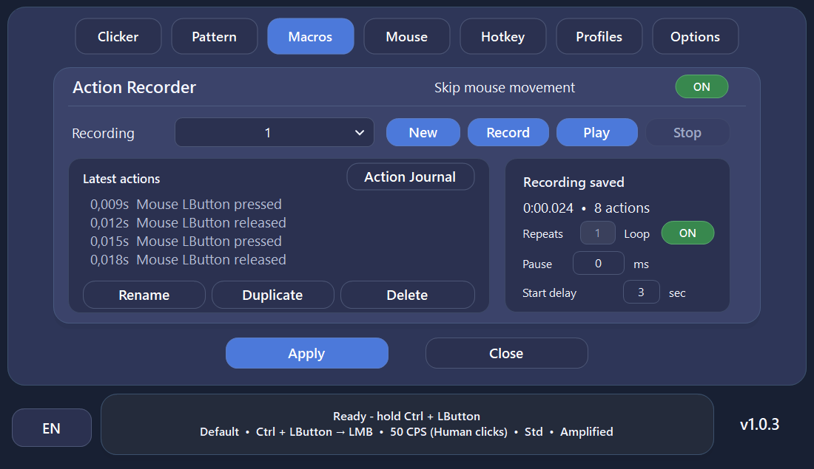
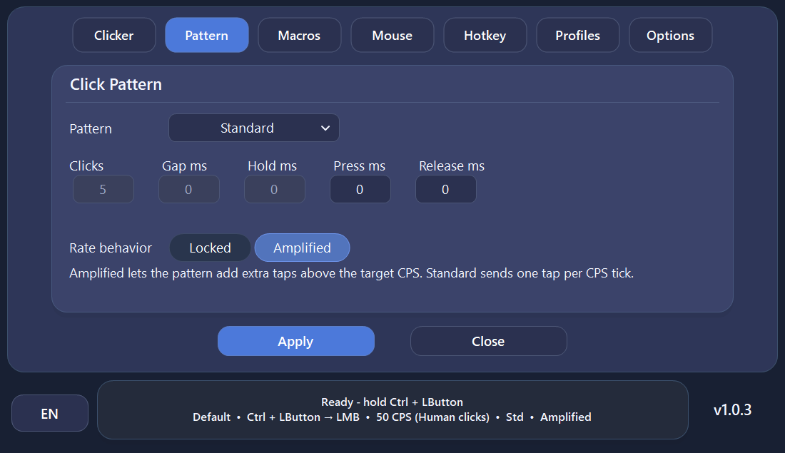
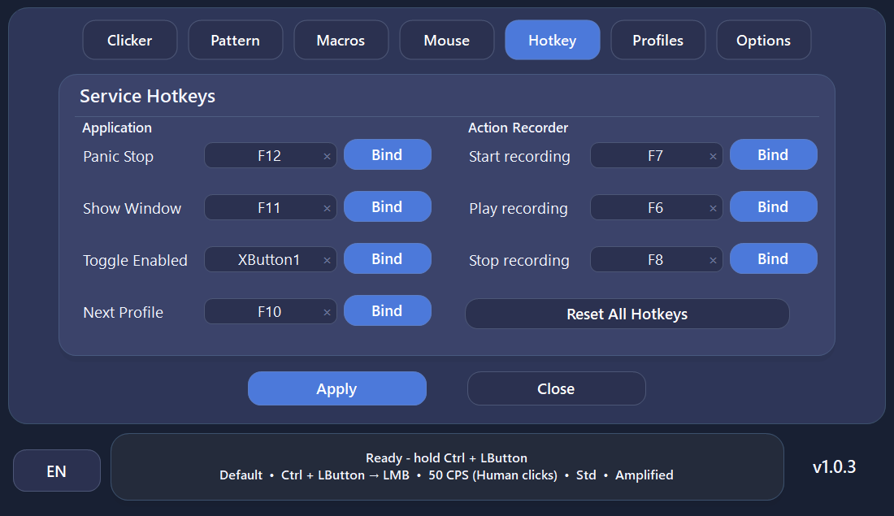
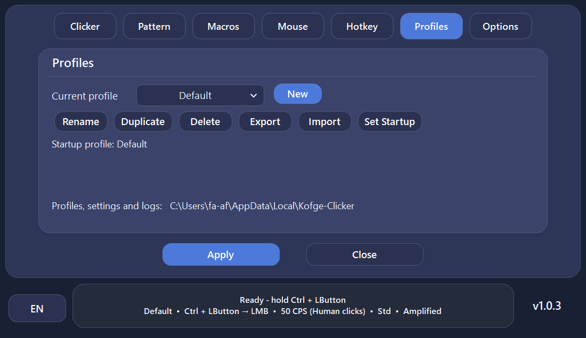
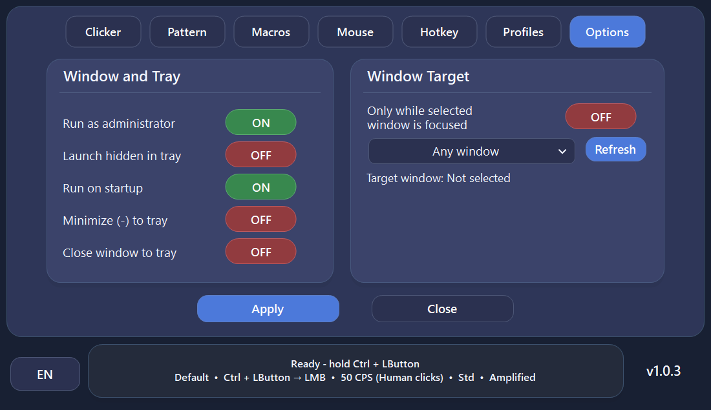
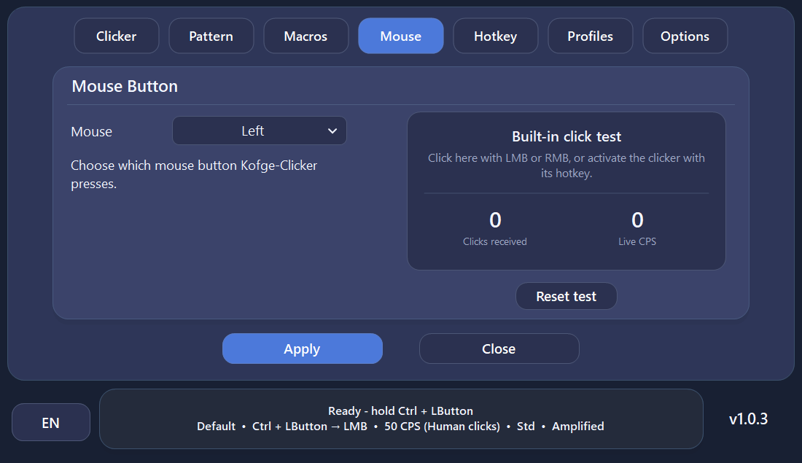

⚡
1–100 CPS
Adjust click speed and behavior for different tasks, with multiple timing patterns and humanized options.
Kofge-Clicker is a fast, portable Windows auto clicker and macro recorder with humanized clicking, multiple click patterns, global hotkeys, reusable profiles and window targeting.

Configure clicks, record and replay actions, manage hotkeys, profiles and target windows without paid unlocks or a premium tier.
Adjust click speed and behavior for different tasks, with multiple timing patterns and humanized options.
Record and replay mouse movement, buttons, scrolling, keyboard input and key combinations, with repeats, start delay and an editable Action Journal.
Use keyboard keys, mouse buttons and modifier combinations even while Kofge-Clicker is not focused.
Add less mechanical timing behavior instead of relying only on perfectly fixed click intervals.
Save different configurations and switch between them instead of rebuilding your setup every time.
Bind behavior to a selected application window for more controlled automation workflows.
Desktop gets a compact preview grid. On mobile, swipe through the cards. Tap any screenshot to open the full image.

MacrosRecord, replay and edit mouse and keyboard actions.
Click PatternsTune click timing and behavior.
HotkeysClicker, profile and macro controls from anywhere.
ProfilesSave and switch reusable configurations.
Window Targeting & OptionsRestrict automation to a selected application window.
Mouse & Click TestChoose the click button and verify output with the live CPS test.The essentials take less than a minute, and the complete guide is always available when you need more detail.
Get the latest official GitHub build. No installer or separate .NET installation is required.
Choose CPS and a hotkey for clicking, or record a complete action sequence in the Macros tab.
Use Hold / Toggle, global hotkeys and profiles to return to the setup you need without rebuilding it.
Every tab, macros, hotkeys, example configurations, updates and troubleshooting in one place.
Auto clickers need low-level Windows input functionality. Kofge-Clicker makes the implementation public instead of hiding it inside a closed binary.
Kofge-Clicker's complete source is public under the MIT License and can be reviewed directly on GitHub.
Kofge-Clicker's updater validates available release information including file size, executable format, version and GitHub-provided SHA-256 when available.
Administrator mode is optional for compatibility with elevated applications; normal use does not require it unless enabled.
Kofge-Clicker uses standard Windows low-level keyboard and mouse hooks so configured hotkeys can work while another application is focused. Generated input is marked so Kofge-Clicker can distinguish its own input from physical input and avoid triggering itself.
New or uncommon Windows executables may be shown as unrecognized by SmartScreen or receive extra browser checks while reputation is still being established. Always verify that your Kofge-Clicker download came from the official GitHub repository.
Yes. There is no paid tier, advertising, subscription or locked premium feature set.
No. Official releases are distributed as a portable, self-contained single-file Windows executable.
Applications running with elevated Windows privileges can require input tools to run at the same privilege level. Administrator mode is therefore available as an optional compatibility setting.
Yes. The full C# source is available on GitHub. The project targets .NET 8 for Windows and can be built with the .NET 8 SDK.
Use only the official Kofge1/Kofge-Clicker GitHub Releases page linked throughout this site.
Choose a private build made only for you, or sponsor a feature for the main free Kofge-Clicker release. Feasibility, price and timing are agreed before any paid work begins.
No GitHub account is required. Constructive feedback, bug reports and ideas help make Kofge-Clicker better.
Kofge-Clicker remains completely free and open source. If the project is useful to you, you can optionally support it. Donations do not unlock features or change access.
ERC20
TRC20
Please double-check the selected network before sending.
The latest stable release in one portable .exe, with no ads, subscriptions or paid feature limits.